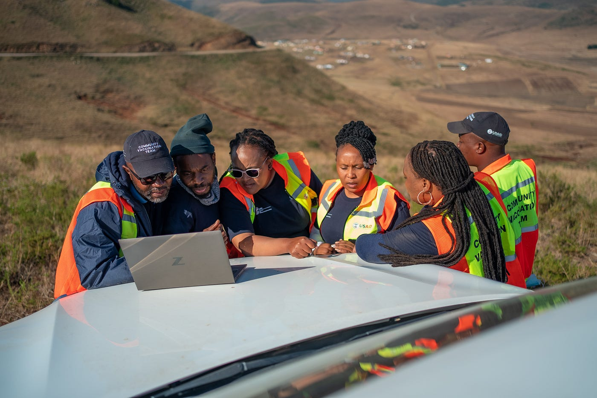

We will install solar panels that generate energy to power a local water filtration system, making clean
drinking water available even during load shedding.
Excess solar energy is used to charge batteries that supply limited electricity to nearby homes—for
lighting, mobile phones, radios, and other essentials.
Our system is designed to be modular and off-grid, reducing reliance on the national power supply and
protecting the community from the risks of illegal connections or paraffin use.
Why This Matters
Load shedding and blackouts are very common in Johannesburg, cutting off both water and electricity at the same time.
Many households rely on unsafe alternatives like illegal wiring or candles, which increase the risk of fires and accidents.
By using solar energy, we will be helping communities become more resilient, eco-friendly, and energy independent.
What Can We Do?
Report leaks or broken taps as soon as you notice them using the app.
Avoid overloading the system by charging only essential devices.
Attend basic training workshops to understand the solar and filtration units.
Report issues and give feedback directly through the app.
Educate friends and family about using clean water and solar energy responsibly.

Future Targets
Increase solar capacity to support more than just lighting and phone charging.
Establish a community-led maintenance program to support job creation.
Create a network of solar-powered water and energy hubs across Johannesburg.
Partner with local NGOs and suppliers to safely manage battery lifecycles and e-waste.
Explore integration with Johannesburg Water and City Power for larger-scale support.